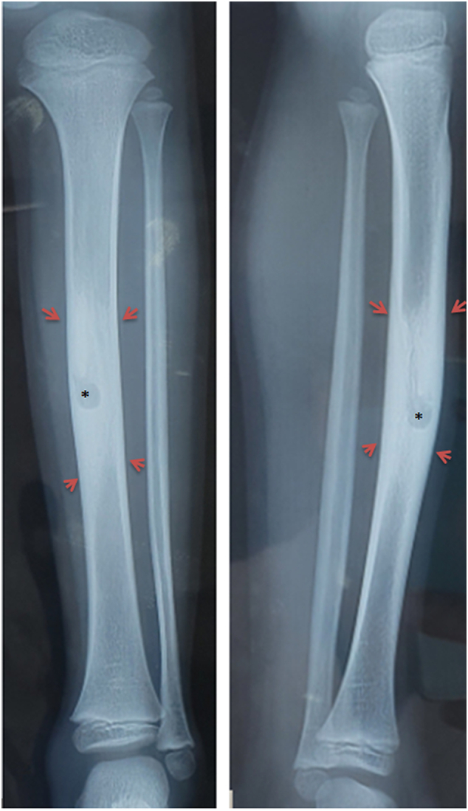
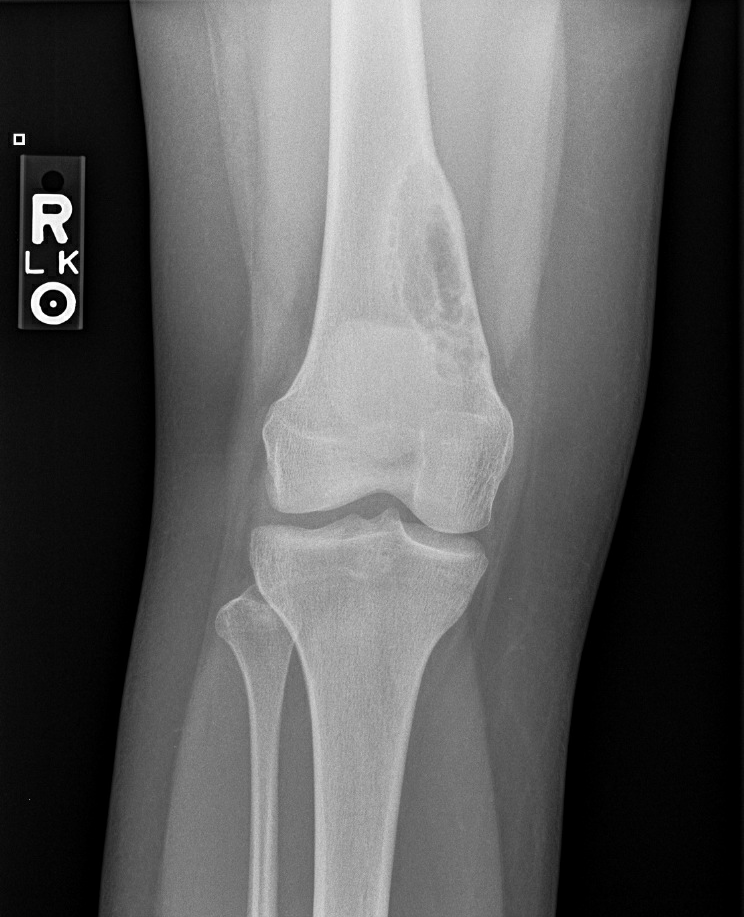
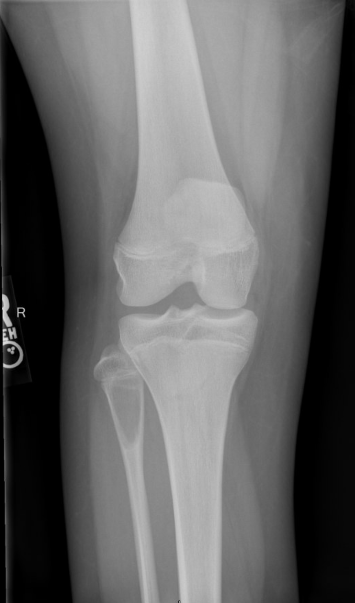

Interesting Case Conference
Langerhans Cell Histiocytosis
Daniel Hofstedt, DO
Tuesday, March 11, 2025
Case Presentation
- 11-year-old female (initially 9 years old) with persistent left thigh pain for several months in 2023
- Initially diagnosed as "growing pains" but developed limping by November 2023
- Medical history: IgA deficiency, eczema, ADHD, anxiety
Advanced Imaging - MRI

- Heterogeneous lesion involving mid to distal left femoral diaphysis
- Extensive reactive changes in surrounding medullary canal
- Periosteal new bone formation with mild expansion
Classification of LCH
- Unifocal (localized): Single bone/few bones (~70% of cases)
- Multifocal unisystem: Multiple bones and/or other single system (~20%)
- Multifocal multisystem: Disseminated involvement of multiple systems (~10%)
Epidemiology and Clinical Presentation
- Most common in children 1-3 years; can occur at any age
- Male predominance (M:F = 2:1)
- Presentation varies by site of involvement:
- Bone pain and swelling (most common)
- Skin rash
- Diabetes insipidus (pituitary involvement)
Musculoskeletal Manifestations
Skeletal Distribution
- Occurs in ~80% of LCH patients
- Common sites:
- Skull (most common)
- Long bones (femur, humerus, tibia)
- Pelvis
- Spine
- Ribs
- Mandible
Differential Diagnosis
Diaphyseal and Metaphyseal Lytic Lesions in Children
| Diagnosis | Key Differentiators and Buzzwords | Example |
|---|---|---|
| Langerhans Cell Histiocytosis | Well-defined lytic lesion, narrow zone of transition, mild periosteal reaction, possible soft tissue component | |
| Osteomyelitis/Brodie's abscess | "Penumbra sign" on MRI, sequestrum, cloaca, involucrum |  Zairi MZairi M, Boussetta R, Msakni A, Mohseni AA, Nessib MN. Subacute osteomyelitis of the tibial diaphysis associated with Brodie's abscess: A rare case report of a four-year-old child. Int J Surg Case Rep. 2021 Dec;89:106453. doi: 10.1016/j.ijscr.2021.106453. Epub 2021 Sep 28. PMID: 34775323; PMCID: PMC8593451. |
| Ewing sarcoma | More aggressive appearing, permeative destruction, larger soft tissue mass, "onion-skin" periostitis |  |
| Non-ossifying fibroma | Eccentric, cortically-based, thin sclerotic margins, scalloped borders, no periosteal reaction |  |
| Bone cysts (SBC/ABC) | Expansile with thin cortex, "fallen fragment sign" (SBC with pathologic fracture), "fluid-fluid levels" (ABC) |  |
Extraskeletal Manifestations
Brief Overview
- CNS: Pituitary stalk thickening → diabetes insipidus
- Pulmonary: Nodules → cysts (predominantly upper lobes)
- Skin: Seborrheic-like rash, xanthomatous lesions
- Liver/spleen: Organomegaly, sclerosing cholangitis
- Lymph nodes: Cervical lymphadenopathy, Mesenteric lymphadenopathy
Pathologic Features
- Proliferation of Langerhans cells with grooved/folded nuclei
- Admixed eosinophils, lymphocytes, neutrophils
- Diagnostic markers:
- CD1a+
- Langerin (CD207)+
- S100+
- BRAF V600E mutation in ~50% of cases
Treatment and Prognosis
- Unifocal disease: Often observation alone or local therapy
- Multifocal/multisystem: Systemic chemotherapy ± steroids
- Our patient: Good response with resolution of metabolic activity
- Prognosis:
- Excellent for unifocal osseous disease (>90% survival)
- Guarded for multisystem disease with risk organ involvement
Key Teaching Points
- "Punched-out" skull lesions with beveled edges are pathognomonic
- Vertebra plana = think LCH in children
- Periosteal reaction present in long bone lesions, absent in skull
- Classic triad: Lytic bone lesions + exophthalmos + diabetes insipidus
Summary
- Langerhans Cell Histiocytosis has variable clinical manifestations
- Classic imaging appearance depends on anatomic location
- Unifocal disease has excellent prognosis
- Our patient shows complete metabolic response on follow-up
References
- Goyal G, Young JR, Koster MJ, Tobin WO, Vassallo R, Ryu JH, Davidge-Pitts CJ, Hurtado MD, Ravindran A, Sartori Valinotti JC, Bennani NN, Shah MV, Rech KL, Go RS; Mayo Clinic Histiocytosis Working Group. The Mayo Clinic Histiocytosis Working Group Consensus Statement for the Diagnosis and Evaluation of Adult Patients With Histiocytic Neoplasms: Erdheim-Chester Disease, Langerhans Cell Histiocytosis, and Rosai-Dorfman Disease. Mayo Clin Proc. 2019 Oct;94(10):2054-2071. doi: 10.1016/j.mayocp.2019.02.023. Epub 2019 Aug 28. PMID: 31472931.
- Zaveri J, La Q, Yarmish G, Neuman J. More than just Langerhans cell histiocytosis: a radiologic review of histiocytic disorders. Radiographics. 2014 Nov-Dec;34(7):2008-24. doi: 10.1148/rg.347130132. PMID: 25384298.
- Zairi M, Boussetta R, Msakni A, Mohseni AA, Nessib MN. Subacute osteomyelitis of the tibial diaphysis associated with Brodie's abscess: A rare case report of a four-year-old child. Int J Surg Case Rep. 2021 Dec;89:106453. doi: 10.1016/j.ijscr.2021.106453. Epub 2021 Sep 28. PMID: 34775323; PMCID: PMC8593451.
Thank You
Questions?